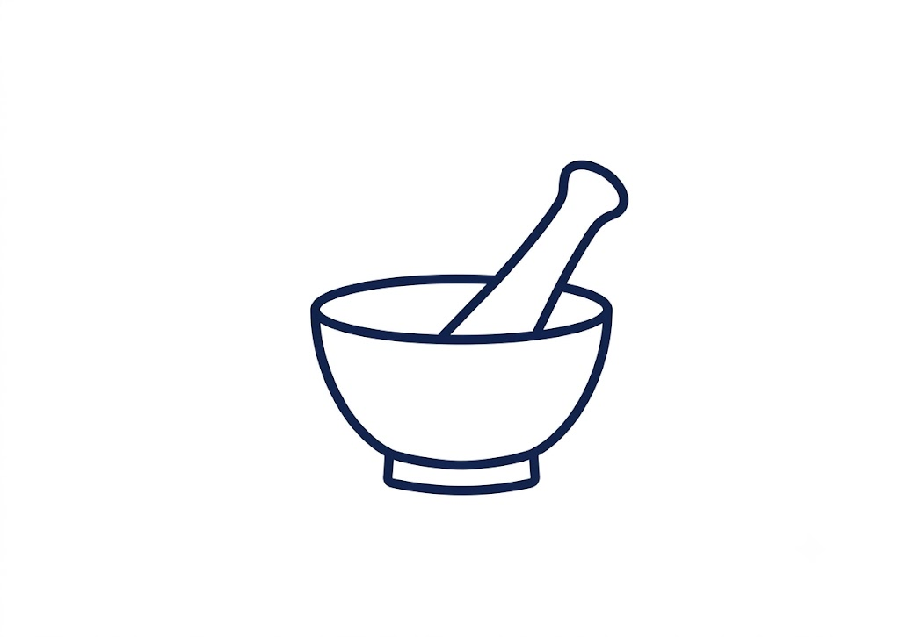
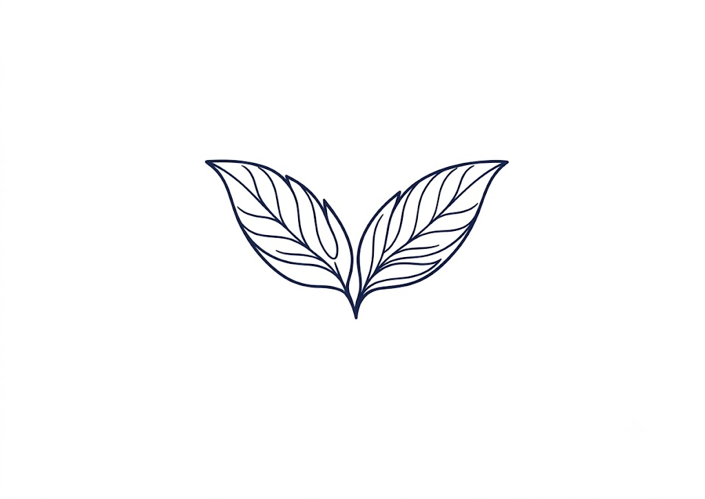

人気No.1
Facial Soap
洗顔石けん
肌タイプに合わせて調合。毛穴の汚れをやさしくオフし、しっとりとした洗い上がりをお届けします。
¥3,800〜（税込）
京都宇治のアトリエから、
心穏やかな贅沢な時間を。

Our Story
はじめまして。京都宇治のアトリエ「l'atelier Yumiko」の店主です。
薬剤師として長年、肌トラブルに悩む方々と向き合ってきた経験から、「本当に肌に優しいものを自分で作りたい」という想いで石けん作りを始めました。
以来25年。天然素材一つ一つにこだわり、あなたのお肌の状態や悩みに合わせた「あなただけの石けん」をお作りしています。
Our Features
国産・オーガニックの植物オイルや精油を厳選。合成保存料・着色料は一切使用しません。薬剤師としての知識で、安全性を徹底確認しています。
乾燥肌・敏感肌・混合肌など、あなたのお肌の状態に合わせてレシピを調整。香り・色・形もご希望に応じてカスタマイズできます。
熱を加えない低温製法で、素材本来の栄養素を最大限に保ちます。4〜6週間かけてじっくり熟成させることで、肌なじみのよいなめらかな石けんに仕上がります。
Products
すべての商品は、受注後にアトリエで一つひとつ丁寧にお作りします。
Facial Soap
肌タイプに合わせて調合。毛穴の汚れをやさしくオフし、しっとりとした洗い上がりをお届けします。
¥3,800〜（税込）

Body Soap
全身を包む豊かな泡立ち。保湿成分をたっぷり配合し、バスタイムをリラクゼーションの時間へ。
¥3,200〜（税込）
Gift Set
大切な方への贈り物に。上質な包装で、特別な日をさらに彩ります。名入れメッセージカード付き。
¥7,500〜（税込）

Natural Cosmetics
石けんと同じ天然素材を使ったスキンケアライン。美容液・クリーム・リップなどご用意しています。
¥2,500〜（税込）
How to Order
フォームまたはLINEよりお気軽にご連絡ください。肌の悩みやご希望をお聞かせください。
お肌の状態・生活習慣・好みの香りなどをヒアリングし、あなたに最適なレシピをご提案します。
ご注文後、丁寧に石けんを仕込みます。コールドプロセス製法のため、熟成に約4〜6週間いただきます。
丁寧に梱包してお届けします。ご使用方法のしおりを同封。リピートのお客様には在庫から早めにお届けできる場合もあります。
Testimonials
★★★★★「敏感肌で何を使っても荒れてしまっていましたが、こちらの石けんを使い始めてから肌トラブルがなくなりました。香りも好みのものを作っていただけて、毎朝の洗顔が楽しみになっています。」
★★★★★「母へのプレゼントにギフトセットを贈りました。包装がとても上品で、母も大変喜んでいました。石けんの使い心地も絶賛しており、今では自分用も注文するようになりました。」
★★★★★「薬剤師さんが作られているということで安心感が違います。素材について詳しく説明していただき、納得して使うことができています。お肌がふっくらしてきたと感じています。」
Contact
ご質問・ご相談はお気軽にどうぞ。
カウンセリングは無料です。
営業時間：火〜土 10:00〜17:00（日・月・祝 定休）